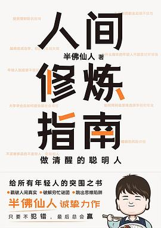

《人间修炼指南》

总体观点
《人间修炼指南》是一本充满市井生存智慧与硬核风控思维的“防割避坑红宝书”。作者半佛仙人凭借多年在互联网金融一线从事反欺诈、信贷风控与资产清算的实战经验，撕下了现代商业社会各种包装精美的光鲜外衣，将真实的人性博弈还原为冰冷的利益算盘。
全书以“风险控制是人生的第一底线”为核心哲学，横跨职场打工人自我保护、加盟连锁智商税识别、消费主义PUA破解到逆周期现金流管理。作者用标志性的骚气反讽与大白话，告诫读者：不要用感性的善良去考验人性的贪婪，学会做有边界、懂套路、懂防守的“清醒聪明人”，才能在残酷的世界中从容自洽地活下去。
核心观点
-
1. 风控思维：活着比赢更重要，守住下限即是胜利
普通人一生能承受的致命失误非常有限；不要盲目追逐暴利与逆袭神话，建立不碰高风险诱惑、不给他人担保、手握充足现金流的底线防御是人生第一大事。
面对年化收益超过10%的理财项目，风控常识会瞬间拉响警报：你图人家的利息，人家要你的本金，坚决一票否决远离庞氏骗局。 -
2. 商业加盟割韭菜本质：卖铲人永远不承担淘金风险
市面上火爆的奶茶、炸鸡快招加盟品牌，其商业模式绝非依靠终端卖产品赚钱，而是通过包装样板间虚假排队，靠向加盟商收取加盟费与高价设备原物料赚取暴利。
拆解快招公司请群众演员排队制造虚假火爆假象，诱使返乡创业青年掏出二十万积蓄加盟，开业两月后迅速亏光倒闭的经典杀猪盘套路。 -
3. 职场生存铁律：看懂领导的KPI算盘，做好留痕防甩锅
职场不是讲感情的大家庭，本质是契约与利益共同体；核心是要搞清领导的年终考核指标并成为其关键抓手，同时在所有关键决策上做好邮件与文档留痕。
在跨部门协同重大项目中，凡是口头承诺的需求必须要求对方通过工作邮件发送确认抄送相关总监，防止项目延期时被对方瞬间甩锅背黑锅。 -
4. 消费主义洗脑：买买买无法买来真实的自我认同
现代营销工业擅长制造焦虑，将特定奢侈品品牌、高端咖啡或小资生活方式与“独立、精致、优雅”强行绑定，诱导年轻人在超前借贷中透支未来自由。
揭秘分期消费网贷的精巧利息陷阱：日利率万分之五看似微不足道，折算成年化实际利率高达18%以上，像温水煮青蛙一样吸干年轻人工资。 -
5. 戒掉老好人心态：善良必须带上锋利的獠牙
无底线的妥协与讨好只会招致更多的压榨与轻蔑；建立明确的个人底线，敢于直接拒绝不合理要求，反而在人际交往中赢得真正的尊重与安全感。
面对亲戚朋友无节制的借钱索求，学会使用“家庭资金全部买了定期理财或房贷月供极重”的合理解释坚决拒绝，绝不打肿脸充胖子。
全书结构
-
第一篇：职场风云录——打工人的防坑与进阶指南
拆解职场PUA套路、看懂公司组织架构变动的暗流、如何与难缠领导相处、跳槽加薪的时机把握与离职背调注意事项。
深度剖析“画大饼股权激励”背后的期权行权价猫腻，教导职场人认清现金到手才是真收益的硬道理。 -
第二篇：商业照妖镜——识破市井割韭菜经典套路
系统拆解快招加盟骗局、二手车市场泡水调表车翻新术、二手房买卖中的定金违约陷阱、微商传销拉人头模式的金融防腐蚀课。
详细拆解二手车商如何利用合同文字游戏，在补充协议中隐藏“事故车概不退还”霸王条款的防骗反杀全攻略。 -
第三篇：人情冷暖局——如何在复杂人际中清醒自保
剖析熟人社会的道德绑架机制、合伙创业中的亲友反目魔咒、如何甄别身边的精神吸血鬼并建立健康的心理防御防火墙。
指导与亲友合伙开店时如何丑话说在前头：必须一开始就用具有法律效力的章程明确股份比例、退出机制与日常经营决策权。 -
第四篇：守财御冬术——普通人的资产负债表保卫战
低增长时代的财富管理哲学：远离高杠杆炒房、防范非法集资与空气币骗局、筑牢家庭六个月以上应急备用金安全垫。
测算家庭负债率超过50%在遭遇失业或大病突发事件时的脆弱性，倡导极简消费与防御性资产储备。 -
第五篇：心智修炼录——做一个通透自洽的清醒强人
破除精神内耗与盲目比较心理；接纳自己的平庸，在平凡琐碎的现实泥潭中找到乐趣，以坚韧通达的心态度过精彩人生。
半佛仙人结语寄语：“这个世界虽然充满套路，但只要你看懂了底层代码，就能笑着在人间优雅打怪通关。”